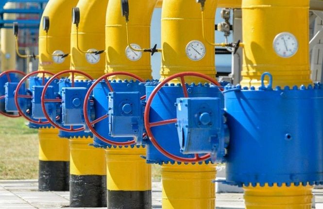

П'ять кроків України на шляху до енергетичної незалежності.

Енергетична незалежність — це питання національної безпеки для України, над яким вона старанно працювала в 2017 році.
Хто слідкує за новинами знає, що "Нафтогаз" переміг у арбітражній справі в Стокгольмі в 80 мільярдів доларів, але це лише частина історії. Ось п’ять важливих етапів, які у минулому році були дуже важливими для енергетичного сектору.
- Об'эм
- Тиск
- Вага
- Густина
Перемога в Стокгольмі
Минулого місяця Стокгольмський арбітраж прийняв остаточне рішення щодо справи НАК "Нафтогаз України" і "Газпрому" за договором купівлі-продажу газу, підписаного в 2009 році. Важливим є те, що тепер не буде цін, невиправданих на конкурентному ринку. Це рішення є великим полегшенням для компанії та всіх споживачів в Україні.
Це також деполітизувало ціни на газ. У лютому арбітражний суд має винести рішення щодо претензії "Нафтогазу" з приводу багатомільярдної компенсації від "Газпрому".
- Рівень
- Рівень 1
- Рівень 2
- Рівень 3
2. Виробництво газу нарешті збільшується
У 2017 році обсяг внутрішнього видобутку природного газу в Україні збільшився на 3,1% (до 20,8 млрд. куб. м).
Державне підприємство "Укргазвидобування" (УГВ), яке також є найбільшим виробником газу в країні, збільшило обсяг виробництва до рекордно високого рівня за останні двадцять п’ять років — 15,3 млрд. куб. м, (на 4,8% за 1 рік).
Збільшення обсягів виробництва УГВ та зростання кількості приватних компаній на ринку є досить сильним та позитивним сигналом для потенційних іноземних інвесторів.
Реформування ринку електроенергії
Ринок електроенергії в Україні потребує змін. Необхідна справжня демонополізація цього сектору разом із сучасною регуляторною базою. Це стане першим кроком на шляху до лібералізованого ринку.
- кран 1
- кран 2
- кран 3
- кран 4
- кран 5
Проте зміни відбуваються вже зараз.
Верховна Рада прийняла законодавство, щоб створити справді конкурентне середовище, яке допоможе модернізувати систему.
Закон має набрати чинності 1 липня 2019 року. Він був задуманий відповідно до Третього енергетичного пакета ЄС (Третій Енергопакет ЄС — це пакет законів щодо внутрішнього ринку газу та елекроенергії у Європейському Союзі).
- рік 2001
- рік 2002
- рік 2003
- рік 2004
США будуть продовжувати санкції проти Росії, підтримуючи Україну
Коли Конгрес США ввів нові санкції проти Росії в 2017 році, заголовки не змогли відобразити всю глибину та масштаби наслідків цього кроку для енергетичного сектору України.
Україна повинна залишатись головною країною транзиту газу з Росії до Європи, оскільки це є найбільш економічно логічним шляхом для транзиту енергії до Європи.
Цього року "Укртрансгаз" (підрозділ "Нафтогазу", який відповідає за транзит газу) доставив 93,5 млрд. куб. м природного газу в ЄС без затримок або переривань. Це найбільший обсяг транзиту за останні вісім років. Україна більш ніж надійний партнер.
Перебудова фіскального режиму нафтогазової галузі
Україна нарешті знайшла спосіб стимулювати внутрішнє виробництво газу.
Незважаючи на те, що законодавство доволі складне, необхідно скорочувати споживання енергії та збільшити виробництво енергії, щоб досягти більшої незалежності.
Підсумовуючи, Україна досягла значного прогресу на шляху до енергетичної незалежності у 2017 році.
Збільшення видобутку газу буде залежати від узгодженості та безперервності роботи нашої фіскальної політики. Державна компанія "Нафтогаз" та її дочірні компанії "УГВ" та "УТГ" залишаються вразливими до політичного тиску та корупції.
Міжнародне співробітництво в енергетиці вимагає супроводу зобов’язань уряду та президента. І рішення про транзит все ще розглядається в арбітражному суді. Надія України — остаточне очищення усіх перешкод на шляху відокремлення "Нафтогазу" в 2018 році.
- частина 1
-
-
підчастина
- частина 1.1
- частина 1.2
- частина 1.3
- частина 2
Оскільки, у лютому у США проходить "Місяць чорної історії", нагадаємо вислів Мартіна Лютера Кінга: "Якщо ти не можеш літати, то біжи, якщо ти не зможеш бігти, то йди, якщо ти не можеш ходити, тоді повзи, але щоб ти не робив, ти маєш продовжувати рухатися вперед ". І ми будемо рухатися вперед.